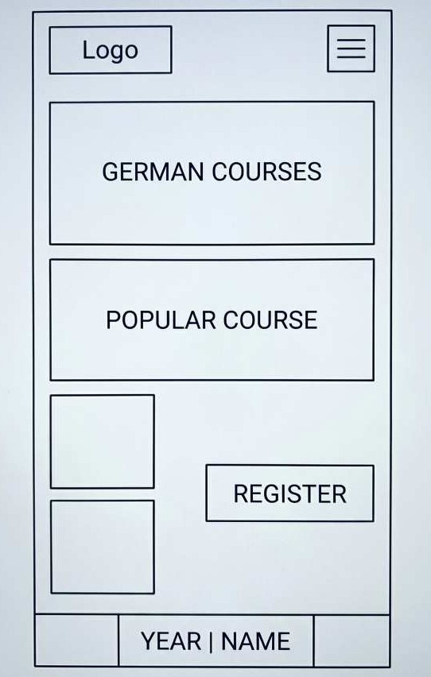
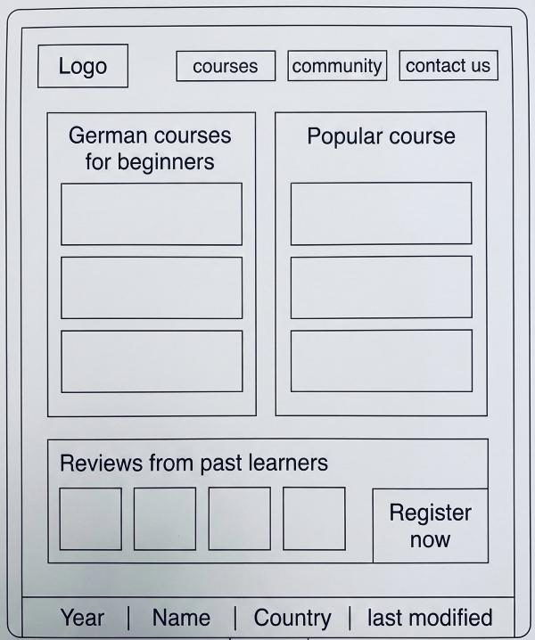

Site Name
Name: German Bridge
Reason: I chose this name because it represents the connection between learners and the German-speaking world. It signifies a transition from learning to communicating, building a "bridge" to new opportunities.
Site Purpose
The purpose of German Bridge is to provide a platform where learners can access course level information (A1-C1), download learning materials, and participate in a community forum to find study partners and ask language-related questions.
Scenarios
- Where can I find a list of available B1 level courses and their teaching modes?
- How can I connect with other students to practice my German speaking skills?
Color Scheme
The Primary Color (#003366) is used for headings and the header background. The Accent Color (#FFCC00) is used for the site title and future call-to-action buttons.
Typography
Headings Font: Open Sans Serif (applied to h1, h2, and h3 tags).
Body Font: Open Sans (applied to all paragraph text and lists).
Wireframes
Mobile View

Desktop View
